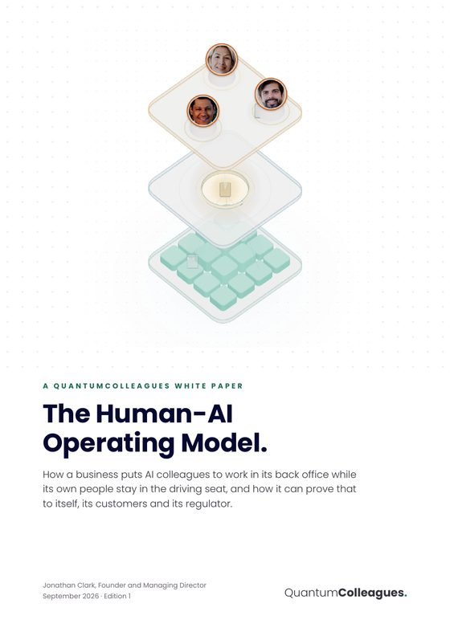

The Human-AI operating model
We designed our human-AI operating model to ensure that people are in the driving seat and their work is amplified, not replaced. Here is the whole idea in one moving picture, the plain English behind it, and a white paper you can request.
Named, accountable, and still in charge. Anything with consequence comes to a person, and the record shows who. Deciding is a lighter job than doing, so their time goes on judgement.
A rule, not a person: anything with consequence stops here. It is written down before go live, agreed with the people who sit at it, and it is not a setting the AI can change. No colleague holds the send button.
One coordinated set of agents. They read, sort, draft, look things up in your own policies and answer with citations, keep the log, and produce the daily report. They prepare and they never decide.
How you decide what crosses the gate.
Ask one question of each kind of work: if this went wrong, who would have to put it right, and could they? If the honest answer is a person, a customer or a regulator, it stops at the gate. If the colleague would simply do it again correctly, it stays below.
What each colleague may and may not do on its own.
For every kind of work a colleague handles, its permissions are written down in plain English before it goes live, agreed with the business, held outside the model, and enforced by the platform on every action. A prompt that says "be careful" is not a control, because a control only counts if it holds without the AI's cooperation.
A colleague starts cautious. As it proves itself, the business can widen what it does alone. If it gets something wrong in a way the system can verify, its permission for that kind of work narrows at once and a person is told. Widening it again is a human decision, never an automatic one.
Every action is logged with what it did, why, what it relied on, and who approved it. That is what we mean by auditable by design. It is designed to support what your sector's regulator expects, rather than to claim compliance on your behalf.
Ten pages. The model, the consequence test, a week in the back office, how to get started, and ten questions to ask anyone offering you AI for your business.

Leave your name and email and we will send it to you. We use your details only to send the paper and to reply if you write back.
✓ Request received
Thank you. We reply personally with the paper, usually the same day.
QuantumColleagues is half owned by an asset locked community interest company. SMEs and regulated businesses buy our AI products and advisory services, and the profits then fund free post-AI training and career planning for people from every walk of life. So when we say people decide, we mean it twice over. Read the mission → Admin Core, this model as a product → Advisory, learn to run it yourselves →
© QuantumColleagues Ltd 2026 · Company No. 17219359 · Tel 0333 880 0712 · 50% owned by Quantum Colleagues Training CIC (No. 17244034) · Photos: Pexels · Privacy · Follow on Google